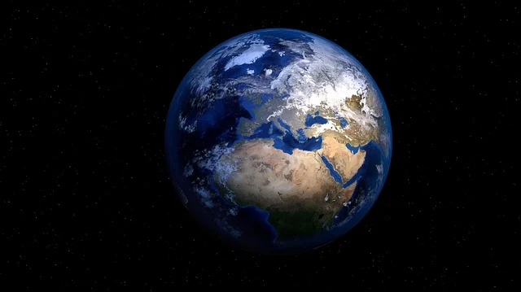

Dünya

Atmosferimiz çoğunlukla nitrojenden oluşur ve nefes alabilmemiz için bolca oksijen içerir. Ayrıca atmosferimiz bizi meteoritlerden korur, atmosferimize giren meteorlar parçalanarak yer yüzüne ulaşırlar. İçinde yaşadığımız gezegen olmasına rağmen Dünya hakkında hala bilmediğimiz birçok şey vardır. O yüzden yörüngemizde onlarca uydu Dünya’nın fotoğraflarını çekip, çeşitli ölçümler almaktadır. Bu uydular sayesinde hava durumu, okyanuslar, toprak ve küresel ısınma hakkında daha çok bilgi edinebiliyoruz.
Dünya'nın 1969'da astronotlar tarafından çekilmiş fotoğrafı (Kaynak:NASA)

Dünyanın Kuzey Kutbunun görünümü (Kaynak: NASA)
Dünya (Yer kürəsi): İnsanoğlunun özünü bildiyindən bu yana varlığı bilinir Yer (məşhur istifadə edilən Ərəbcə mənşəli digər adı ilə Dünya , köhnə dildə Ərz) Günəş sisteminin Günəşə uzaqlıq baxımından üçüncü sıradakı planetidir. Üzərində həyat saxladığı bilinən tək təbii göy cisimidir. qatı ya da ‘qaya’ ağırlıqlı quruluşu səbəbiylə üzvü olduğu yer bənzəri planetlər qrupuna adını vermişdir. Bu planet qrupunun kütlə və həcm baxımından ən böyük üzvüdür. Böyüklükdə Günəş sisteminin 9 planeti arasında qaz nəhənglərinin böyük fərqlə arxasından gələrək beşinci sırada yerləşir.